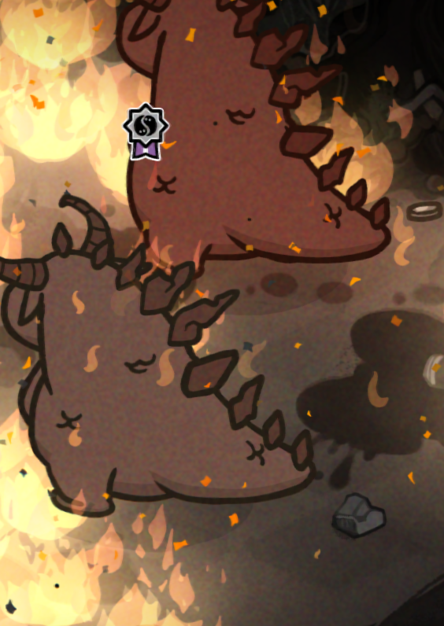
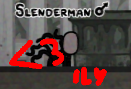
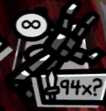

Mewgenics
Mewgenics is a half TRPG (picture Mario vs Rabbids, or XCOM 2), half management roguelike wherein you breed cats and they go on adventures. For the last 2 weeks of my life, I have been playing it consistently whenever I have had time. I now have 100% completion, which is more than good enough for me.
My playthrough, my deeds
Trying to pad this blog out a bit so it's not just a list of things I liked and things I didn't lol. Although I don't have much to actually say either way.
I bought the game while I was away on a trip, and I spent the rest of the trip in my room playing the game. Which maybe makes me a bad person, but my friends can go suck an egg. Mewgenics is much more important. When I came back home, this theme continued in the form of me skipping some classes to play more Mewgenics. No regrets there. I had found the reason for my life.
Since I'm a busy girl, with many fires cooking iron in the oven, all metaphysical, I decided I would 100% the game. And fast. Like I said, I'm busy. 100%'ing this game is actually extremely straightforward; there is no Blinding Baby tier bullshit. All you need is:
-Max out all the NPCs (they just require you to donate cats with specific flags, nothing too crazy)
-Kill all the House Bosses, on Impossible difficulty
-Complete every mark, on every class, on Impossible difficulty
-Kill every secret boss with a Collarless squad
To unlock Impossible, you need to defeat every Crazy boss, which requires beating every Hard boss, which requires killing every Normal boss (you do these to finish the story, and they spawn naturally). Thusly, I had to target Impossible House Bosses first. NPCs were not an issue, since quests naturally get done over the course of your gameplay.
If you want House Boss sauce
They're actually pretty easy, for the most part! You only need mid to okay-ish cats. I essentially grinded out Alley runs for like 35 hours, building okay Hunters, Tinkerers, and Psychics. Fourth class was a bit of a wild card, whatever I felt like. This works very well. Expect Impossible House Bosses to pose a bit more of a threat! I admittedly did get owned by some pretty bad elite buffs.

Breeding, House Boss Sauce pt. 2
I got extremely lucky on two counts; I was able to pass down Summon Apprentice to a significant amount of cats, which is a great spell that summons a miniature version of your cat, and I managed to get Double Head mutation, which gives you an extra turn on the first round. You are basically guaranteed to one-turn everything if your build is good. Getting all-7s was much more of a struggle, but I eventually pulled through. Appeal matters!
To talk about my misadventures a bit here, I had a whole room reserved to dwarves and primordial dwarves, which are very powerful disorders. However, since they are disorders, they need low health, which I farmed through poop. Eventually that room killed itself and the dwarves went out of business. Honestly? They weren't even that good. I'm much happier with my average cats.
I don't have very specific advice for how to actually manage your litter, sadly. I just shuffled cats around when inbred couples formed. A lot of my cats are still inbred. Doesn't matter that much, apparently!
Remember when I said I got extremely lucky? That was an understatement. In the midst of clearing out Impossible House Bosses, Slenderman entered my home. He has a special tail mutation that grants cats +1 extra attack every battle. Absolute Crack Cocaine. He wasn't breeding for 20 days or so, and that scared me a lot, but eventually he did start reproducing. So I got extremely, doubly lucky.

Afterboss+
I used all the powerful and rare items beating House Bosses gave me to breeze through Impossible. Special mention to Robotic Arm, absolute MVP. You only need to do like what, 24-ish runs? It's really not that bad.

I played on 4x speed. What's the point of animations? You only ever need to know what is happening when you are actionable, which is NOT during animations.
I did, a LOT of savescumming. Steven, and therefore the game allows it! Why shouldn't I? Not that cheating, or whatever that world entails, actually matters, of course. You've already read my thinkpiece on this, right? Anyways, I wanted to play within the rules of the game, since a challenge isn't much of anything if I don't find myself to be challenged. Back to the original topic, I savescummed!! You never know when a slightly off play will be the death of you. I also admit to letting Steven take the wheel on extremely strong runs, never on the ones that went to Act 3 secret, though. Here's a certified pro-tip: you can enter a battle, and then instantly exit without triggering Steven, as long as you haven't locked any move in yet. This allows you to scout the area and to reshuffle items around. Very useful!
I watched so much stuff while getting my marks done. This is such a good dual monitor game. Sorry if you don't get to experience the joy I did. My Life As A Teenage Robot and Ted (the show, not the movies!) both deserve their own page. Maybe someday! I would like to find a cool item for My Life As A Teenage Robot first though, like an exclusive gold pin...
You know what's weird with these games? Around the 70% mark, it will feel excruciating to play the game, but yet I do, because I am much too invested to stop now. Is this how abusive relationships work? Anyways, now that I'm done, I'm not doing anything, guess my brain told me a fucking lie. I wanna play Devil Survivors! Anyways, even though it is excruciating, that doesn't make it not enjoyable. Of course it doesn't, I wouldn't be playing otherwise. It's a body of work, it's a body of love, that you can't ever change!
Killing the final boss
I fucked up my marks, so instead of an epic finale to infinite, my last mark was jester to mother. What's lame? It was extremely exhilarating to kill mom. I then proceeded to try Grandpa Demon difficulty for 3 hours, which ruined my mood (for those not in the know, Grandpa Demon difficulty is bringing 4 unidentified pills to an Impossible difficulty run, which essentially gives you Impossible++++) . It didn't actually ruin my mood that much because I love playing the game, but I met a dead end on a very successful run and that upset me a bit. Damn you, Boris!
What the game does right
-I already touched on this earlier but, completion is extremely straightforward, no random hindrances a la Rebirth.
-It is much harder to criticize what the game does right because, well, it's a game. Like, if it's fun, I'm not gonna put that as a point, because that's just what a good game, and an average game should be... This is hard lol.
-Very rarely is the game straight up anti-player. You are fully free to do whatever you want to your cats. Edmund McMillen, creator of the game, responded to criticism of people saying you can breed your cats to make the game easy, by telling them to simply not do that, which is true, GOAT, and based!
-(this one is a bit more technical) Something I absolutely love about Mewgenics is that the messaging and themes are entirely derived from the player's gameplay, completely metatextual. You're essentially told everything there is to know about eugenics in one tedious (we'll talk about this later..) package!
-The game is FAST. The amount of TRPG/game is OFF THE CHARTS. If you compare it to, say, Mario vs Rabbids or something, those games have way less TRPG/game. Excellent; I do not give two fucks about story.
What the game does wrong
This is gonna be much longer than the other one. Like I've already stated, it's much easier to state what isn't there that what there is.
1. House management (category separations, it is that serious!)
Christ, it's just not fun! It's tedious! C'est de la merde! I cannot understand how it is legally acceptable to say this game has a management part. At the start of the game, you have very little to actually manage, and you're mostly just trying to get your bearings on the roguelike part of the game, so it isn't much of an issue. But in the midgame, once you get your shit established, and it becomes official as fuck, and your shit is practically a corporation, and your shit is going public? It becomes so annoying! My neurotic attitude didn't allow me to keep any less than 60 cats, which can quickly spiral out of control depending on how little attention I feel like paying when I play. And, if it ever does snowball, and you have 100 something cats to sort through, YOU HAVE TO MANUALLY GO THROUGH EVERY SINGLE ONE, ONE BY ONE, WHILE THEY ARE MOVING AND MEOWING IN THE HOUSE! AND IF YOU DONATE THEM SOMEWHERE, YOU ARE TELEPORTED TO THAT AREA TO GET A USELESS CUTSCENE YOU JUST SKIP REGARDLESS, OR, GOD FORBID, BACK OUT OF THE UI WITHOUT KILLING THE CAT, IN BOTH SITUATIONS, YOU COME BACK HOME WITHOUT THE LITTLE WINDOW OPEN, AND YOU HAVE TO FIND THE CAT YOU LEFT OFF ON. Now, like I said above, this is extremely cool from the player-driven narrative sense, because you actually have a unique, absolutely certain hand in every single life at stake. But as a game? It SUCKS! Once I got my 7-cats, I entirely burned out on house stuff. I try not to think about it at all. It's honestly kind of like Cookie Clicker in this sense. I'm still very mixed on Cookie Clicker. Golden cookie stacking was shit. Mewgenics doesn't even have chocolate chip farms!
I would fix this by, get this, simply adding a fucking menu. Like, even a pause button would be good, FFS! The worst part is that you can't just not think about it, because it is absolutely mandatory that you do house deeds, otherwise you won't have any cats to go on adventures with. My ideal menu would be a spreadsheet type deal, where every single cat and their attributes get listed. I could sort by age, room, or whatever else. I would also really like to be able to give specific orders, like "make those cats breed together", but that's already much more advanced, and I don't really know how it would work.
House building pet peeve: if you have poop in your room, you can go into builder to see them better. However, if you accidentally click on the furniture behind the poop, it gets completely stuck, and you have to remove the poop that is now behind furniture, so you have to move the furniture way out of the way, then remove the poop (which you were already going to do), then put the furniture back, then re-place everything that was attached to that furniture. Like oh my God, why make it so tedious?
2. Random events
The only* anti-player part of the game; not that that's a bad thing! Without anti-player mechanics, you do not have a very interesting game! Nobody wants to play a roguelike that is 100% predictable.. But, man, some events are ridiculous. There is an event that gives you Blood Frenzy, a disorder that gives your cat an extra turn when it kills an enemy, except that on that turn it is AI-controlled, and might attack your cats. You don't have a choice in this! And, the biggest one, there are a ton of events that give you cursed items. Cursed items are items that lock onto your cat and cannot be removed. So they just disable an item slot for the rest of your run... What the fuck? Why? Your run can be entirely disabled by one unlucky event! That is just ***ridiculous***! No! We can live a better way!
3. High difficulties
They're fine. This title is a myth and a lie, and I'm actually gonna talk about something much more sinister.
I mean, they're just typical roguelike difficulty scales. More damage, more loot, elite buffs... Elite buffs, Christ. I am extremely mixed on them. On one hand, I love their concept and function, on the other, some are just unacceptable, they're the second anti-player part of the game! If a boss has Absorbent, you are fucked! That's it! C'est fini! If you are running a spell build without enough per-turn int, you are just dead! If your dps is ranger, and the boss has reflect? Bye-bye! Why?! This is also significantly more common in Grandpa Demon, since everyone and everything has 15 buffs at once. Lol. I personally find the other ones to be pretty okay and clever though. Like, I don't mind Bouncy too much, I guess?
Mildly unrelated, but still pertaining to diffs: some bosses get disproportionately buffed by elite buffs. Namely bosses with adds. Every single add gets buffs, and their hp gets crazy scaled by diff. Take Dreadnaughtus for example, dude has 4 legs, each with their unique buffs, and spawns 40-something HP poop cats, which just run through your team most of the time. Feels extremely unfair to play lol.
4. Areas + Enemies
Mainly about the Lab.
First complaint, Bat from Caves! Not in Labs, surprisingly enough. Just so annoying. Confuses your team, Dodges, runs away far as fuck. Ugh. I don't have any intellectual thoughts on any of these enemies by the way, I just don't like them. I myself am not too sure about the actual worth of having "annoying enemies" in a game. What is a game without challenge, or annoyance? What is a game with TOO MUCH annoyance? Which one do I prefer more? Would I enjoy the game more without the Bat? And it's like, I don't know? It's not fun to meet and fight, but it's not like I would want it to be removed from the game entirely.
Second complaint, Daddy Shark! Any instakill enemy should be handled with care. Especially the very first one you might encounter in the game. Mewgenics, instead, chooses to just spit in your face with rooms wherein shark/s might just kill one of your cats without choice! Especially on higher difficulties! I actually DO think the game would be better without the Daddy Shark. Get that shit out of here.
Honestly, Act 2 does a great job with its enemies (this should be in what the game did well lol). Everything is just right, it's an absolute joy to play.
Act 3. My fucking God. I'll probably miss a few.
Starting in the lab with the Mega Mutant, WHAT WERE THEY THINKING? If you've ever played this game, you know the plight that this guy is. Moving on..
I don't like enemies that inflict injuries. There's a Human Cat enemy that does just that! Not a fan.
The Spewer. Fucking Christ. Talking about him feels like abuse. He's tanky and sucks up your cats and pills! At least he's a yummy item in TBOI.
In the Ice Age, most enemies are kinda tough but still strike the balance of not being too bullshit. Super tanky though.
I strongly dislike Lord Bunga. Injuries are pretty much forced. If you're not careful, you are also almost guaranteed to lose a cat. He's a PITA.
In the Jurassic, I don't like T-Rex and Triceratops because they're big and strong :(. I dislike the boss, read above.
In the Future, fetuses in jars are so annoying. The fat enemies that reflect projectiles are annoying. They essentially start with elite buffs! How is that fair?! Hangerbot is the absolute worst because he gives extra turns and they can just infloop and instakill your cats sometimes. Ugh. I don't understand Zapphauser, or if I'm playing it wrong or whatever, but I don't like how much forced damage there is. It's basically the third biggest sustain check in the game? Speaking of sustain checks, Hitler is the second biggest. He shoots your cats. Kind of extremely easy? His adds don't even have buffs. Not that I'm complaining!
I have had busted ass runs to The End every single time I went there, so I'm not experienced enough to tell you whether any enemy is BS, sorry. They all kinda just died. The Mother is piss easy, to a fault. I have never died, or lost a cat to her, ever.
Every single enemy in The Infinite is a PITA. Speaking of The Infinite, in Impossible, God's evil cat clones copy your equipment, which means you're always speed tying, except they have elite buffs! So they kinda just kill you. Annoyingggg.
6. NPC requirements
I did say this one wasn't an issue beforehand, but uh... It absolutely is. The organ grinder is just completely ridiculous. Why on Earth would I ever have 250 dead cats on hand?! That's so dumb.
7. Items better than others
This one is extremely specific.
Some items in this game are just straight up better than others. For example, Sacred Heart is an item that gives you +1 damage, and shoots 2 sparkles when you use your main attack. Immaculate Heart, on the other hand, is an item that gives you +3 damage +1 magic damage, and shoots 3 sparkles when you use your main attack. And, like, that's not necessarily bad? I just mentally don't like it lol. I feel like you should at least have a reason to ever pick Sacred Heart over Immaculate. This is definitely just me tough.
Finitione
I did say this one wasn't an issue beforehand, but uh... It absolutely is. The organ grinder is just completely ridiculous. Why on Earth would I ever have 250 dead cats on hand?! That's so dumb.
7. Items better than others
This one is extremely specific.
Some items in this game are just straight up better than others. For example, Sacred Heart is an item that gives you +1 damage, and shoots 2 sparkles when you use your main attack. Immaculate Heart, on the other hand, is an item that gives you +3 damage +1 magic damage, and shoots 3 sparkles when you use your main attack. And, like, that's not necessarily bad? I just mentally don't like it lol. I feel like you should at least have a reason to ever pick Sacred Heart over Immaculate. This is definitely just me tough.
Finitione
Overall, despite its flaws, I think that Mewgenics is a great game that is absolutely worth 30 bucks. The gameplay is fun! Play it!